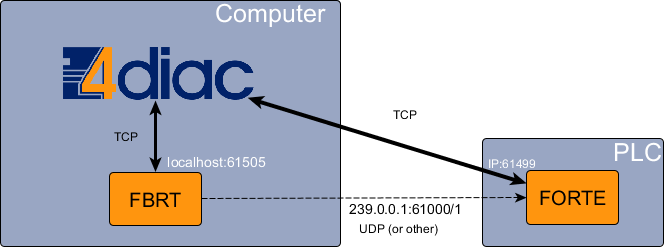

Step 3 - Deploy applications remotely
This page is part of a guide that gives a walk-through over the major 4diac IDE features.
- Overview
- Use 4diac locally
- Create a distributed application
- Deploy remotely (YOU ARE HERE!)
- Create your own Function Blocks
- Other basic features
- Advanced Features [optional]
In this step, the Blink application will not run locally, but in another device. This has not too much to show, but it helps understand the workflow when using real PLCs. Since this page is more of an explanation than actually showing, it's up to the reader to actually implement it. The image below shows the architecture of this step.

Follow these steps to deploy remotely
- Select the PLC hardware or other hardware that can run 4diac FORTE. You can check here the list of supported platforms. The cheap options are Raspberry Pi, BeagleBoneBlack or another small board that runs Linux. Another option would be to use another computer in your network.
- Start FBRT locally as you did in step 3 when deploying devices
- Compile 4diac FORTE for your PLC or other Hardware. Check here for more information.
- Run 4diac FORTE on the device. This depends on the device you are using. Normally it has some type of Terminal or FTP that you can access and launch the executable. Attention! You cannot use the "Launch FORTE" similar as you did with FBRT, because this will launch a FORTE on your machine and not on the device. There's no way of launching 4diac FORTE in the device from 4diac IDE.
- In the System Configuration of the project, change the IP:PORT of the FORTE_PC device to match the one that your device has. You should be able to know the IP of your device. The port is 61499 by default. Remember that you can change this port when launching 4diac FORTE.
- In the Debugging Perspective, select both devices (FBRT_WINDOW and FORTE_PC) just as the step before and click Download.
- Monitor the FORTE_PC the same way as before, and test the application using the buttons. Remember you cannot monitor FBRT.
Troubleshooting
In many cases, there are problems even when doing such a simple example. In most cases, it's a network problem.
If you get an error when downloading to the device, it might be that the IP:PORT is wrong, the device is unreachable (in another network behind a firewall maybe?) or FORTE is not running on the device.
In case you click the Buttons but do not see any reaction in the Blinking part, then there's a communication problem. Try the following:
- If you connected your device directly to your computer, add the computer's IP address as default gateway. In some Linux versions, it should be something similar to:
$ ip route add default [ip] dev [interface]
where [ip] is the IP address of your computer, and [interface] is the network interface where it's connected (eth0, usb0, etc.)
- Make sure that the interface is prepared to handle Multicast packets.
- On Windows machine: run the command window with admin rights, and type:
route PRINT
This lists all the routes used by your PC. You should check that the multicast address used by the application appears there and uses your device IP address as gateway. For our example, it uses the address 239.0.0.1. If it doesn't appear, the address should be added and directed towards the device's IP address. Use the command:
route ADD 239.0.0.1 MASK 255.255.0.0 [DEVICE_IP] METRIC 255
and then it should appear when printing again the routes.
- Another problem found in Windows is that even though the device receives the packets and replies, the application is not receiving them. Even though the packet appears in Wireshark the application does not receive it. A solution is to disable the FIREWALL completely. After that everything should work fine.
Where to go from here?
In the next step you will see how to create your own Function Blocks:
Step 4 - Create your own Function Blocks
If you want to go back to the distributed application running completely locally, here's a link:
Step 2 - Distribute 4diac applications
If you want to go back to the Start Here page, we leave you here a fast access
Start Here page
Go to top